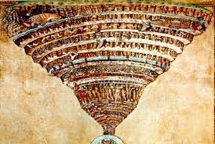
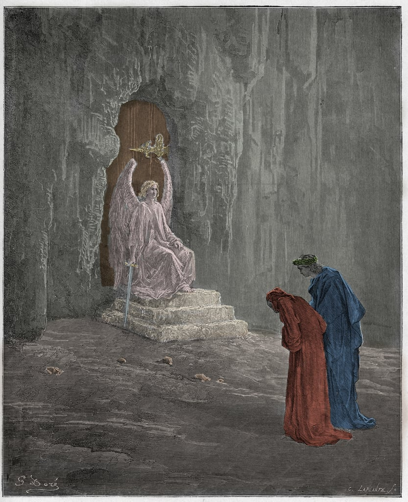
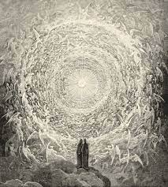

A "Divina Comédia" é uma obra épica escrita por Dante Alighieri no início do século XIV. Dividida em três partes - Inferno, Purgatório e Paraíso - a obra narra a jornada espiritual do autor.
"Inferno" é a primeira parte da obra épica "A Divina Comédia", escrita por Dante Alighieri no século XIV. Nesta parte, o protagonista Dante, acompanhado pelo poeta romano Virgílio, desce aos nove círculos do Inferno, guiado por Beatriz, seu amor idealizado. Cada círculo representa diferentes pecados e punições para os condenados, culminando no mais profundo e terrível, onde reside Lúcifer. Ao longo de sua jornada, Dante encontra figuras históricas e contemporâneas, incluindo traidores, assassinos, corruptos e luxuriosos, cada um recebendo uma punição que reflete seus pecados em vida. A narrativa é uma jornada simbólica da alma humana em busca da redenção e da compreensão do significado do pecado e da virtude.
No "Purgatório", a segunda parte da "Divina Comédia", Dante continua sua jornada guiado por Virgílio, mas agora adentrando o monte do purgatório, onde as almas expiam seus pecados para alcançar a redenção. O monte é dividido em sete terraços, cada um representando um pecado capital. À medida que Dante sobe, ele testemunha penitentes realizando atos de contrição e purificação. Beatriz substitui Virgílio como guia e leva Dante através dos estágios finais do purgatório, culminando em sua ascensão ao Paraíso. O "Purgatório" explora temas de arrependimento, expiação e crescimento espiritual, oferecendo uma visão do processo de purificação da alma rumo à salvação.
"Paraíso" é a terceira parte da "Divina Comédia", onde Dante é guiado por Beatriz através dos nove céus do Paraíso. Cada céu representa uma esfera celestial que abriga as almas dos justos e dos santos, culminando na visão de Deus. À medida que Dante ascende, ele testemunha a ordem cósmica e a hierarquia divina, encontrando figuras bíblicas, teológicas e históricas que compartilham suas visões sobre a divindade e a natureza do universo. O "Paraíso" retrata a busca pela compreensão última da verdade divina e a recompensa final da redenção para aqueles que seguem o caminho da virtude e da fé.
